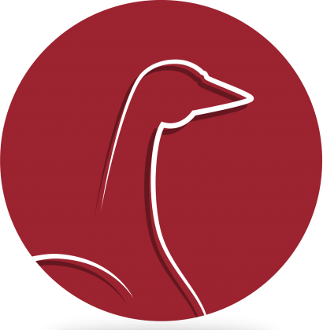
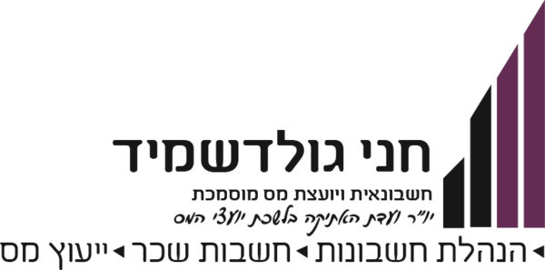
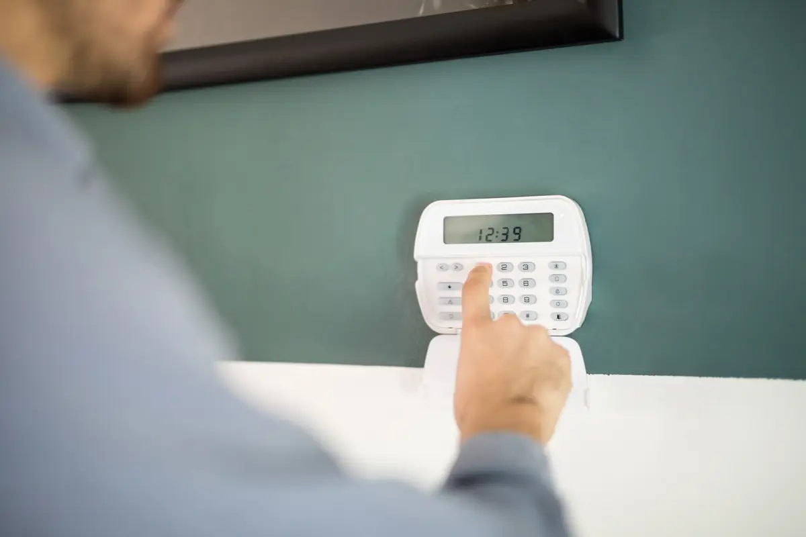

משרדים, חברות, עסקים בהקמה
פתרונות מחשוב ותקשורת למשרד חדש ולעסק בצמיחה
מחשבים לעובדים, ענן וגיבוי, רשת יציבה, מצלמות ובקרת כניסה, ותמיכה שוטפת כשצריך. גורם מקצועי אחד שמרכז את המחשוב, התקשורת ומערכות האבטחה.
לפתרונות לעסקפרופיקס | פתרונות מחשוב ותקשורת
אנחנו מתכננים, מקימים ומתחזקים את מערכות המחשוב והתקשורת של העסק או הבית: רשתות, מצלמות, אינטרקום ובית חכם. המערכות מתוכננות יחד, ויש כתובת מקצועית אחת שמלווה אתכם לאורך הדרך.
שאלון קצר, ואחריו שיחה קצרה שמדייקת את ההצעה
יש מי שצריך את כל המערכות, ויש מי שצריך רק את התשתיות. בחרו את המסלול שלכם.
משרדים, חברות, עסקים בהקמה
מחשבים לעובדים, ענן וגיבוי, רשת יציבה, מצלמות ובקרת כניסה, ותמיכה שוטפת כשצריך. גורם מקצועי אחד שמרכז את המחשוב, התקשורת ומערכות האבטחה.
לפתרונות לעסק
בנייה חדשה, שיפוץ, בית קיים
בבית פרטי, בדירה או בפנטהאוז: נקודות רשת, Wi-Fi, אינטרקום ומצלמות, אזעקה, בית חכם וסאונד, גם במרפסת ובבריכה. בבנייה מתכננים הכל על התוכניות, לפני שהקירות נסגרים. בבית קיים מתאימים פתרון לתשתית שכבר יש.
לפתרונות לבית




שלושה תחומים, כתובת אחת. לחיצה על שירות פותחת את מה שהוא כולל.
שלושה תחומים, כתובת אחת. בחרו תחום, ולחיצה על ריבוע פותחת את מה שהוא כולל.
תמיכת מחשוב, ניהול ותחזוקה, כדי שסביבת העבודה תישאר יציבה.
טיפול בתקלות, התקנות ועדכונים, ניהול משתמשים והרשאות, ומעקב שוטף אחרי המחשבים והרשת. כשמשהו לא עובד, יש כתובת אחת שמכירה את הסביבה שלכם ויודעת מאיפה להתחיל.
לקבלת הצעה לשירות הזה
הגנה על המחשבים, על המידע ועל הגישה אליו.
הגנה על המחשבים ועל הרשת, והרשאות גישה נכונות לכל משתמש. ההגדרות נבנות לפי אופי העבודה, כדי שהמידע של העסק יישאר אצלכם.
לקבלת הצעה לשירות הזהגיבוי קבוע של הנתונים, ויכולת לחזור לעבוד מהר אחרי תקלה.
גיבוי קבוע של הנתונים, גם בענן, ובדיקה שאפשר באמת לשחזר מהגיבוי כשצריך.
לקבלת הצעה לשירות הזה
מחשבים, מסכים, סוויצ'ים ונתבים, מותאמים לעבודה שלכם ומותקנים מוכנים לשימוש.
הציוד נבחר לפי אופי העבודה, מספר המשתמשים והתקציב. הוא מגיע מוגדר ומחובר לרשת, כך שאפשר להתחיל לעבוד מיד.
לקבלת הצעה לשירות הזה
מיילים, קבצים ושיתוף שעובדים מכל מקום, מסודרים נכון מהיום הראשון.
הקמה או מעבר של מיילים, קבצים ויומנים, הגדרת משתמשים והרשאות, ושיתוף מסודר בין העובדים. וגם אם הכל כבר קיים, אפשר לעשות בו סדר.
לקבלת הצעה לשירות הזה
תיקון מחשבים ניידים ונייחים במעבדה: אבחון, החלפת רכיבים ושדרוגים.
מחשב שלא עולה, איטי או שצריך שדרוג: מאבחנים את הבעיה, מסבירים מה משתלם לתקן, ומחזירים אותו מוכן לעבודה.
לקבלת הצעה לשירות הזה
חיבור קווי ישיר ויציב, וארון תקשורת שמרכז את כל המערכות.
נקודת רשת נותנת חיבור יציב ומהיר יותר מ-Wi-Fi, למחשבים, לטלוויזיות, למצלמות ולנקודות גישה. החיווט מתרכז בארון תקשורת מסודר ומסומן, שבו הנתב, המתגים וחיבורי המערכות, כך שקל לאתר תקלה ולהוסיף ציוד.
לקבלת הצעה לשירות הזה
כיסוי אלחוטי שמתוכנן לפי המבנה, תנאי השטח ומספר המשתמשים.
בודקים את המבנה ואת האזורים הבעייתיים, ומציבים נקודות גישה שעובדות יחד כרשת אחת. כך עוברים בין חדרים וקומות בלי לחפש רשת מחדש.
לקבלת הצעה לשירות הזה
לראות מה קורה בעסק או בבית, גם כשאתם לא שם.
מיקומי המצלמות מתוכננים לפי מה שחשוב לראות, וצופים בהן גם מהטלפון.
לקבלת הצעה לשירות הזה
מערכת אזעקה לבית ולעסק, על אותה תשתית עם המצלמות.
מערכת האזעקה מתוכננת יחד עם המצלמות והרשת, כך שהכל משתלב באותה תשתית ומנוהל ממקום אחד.
לקבלת הצעה לשירות הזה
לדעת מי נמצא בחוץ ומי מצלצל, ולהחליט מי נכנס ומתי.
אינטרקום עם מסך, חיבור לטלפון לפי הצורך, ובקרת כניסה לפי משתמשים ושעות. לבית פרטי, לבניין ולמשרד.
לקבלת הצעה לשירות הזה
שליטה נוחה בבית ממקום אחד, בבנייה חדשה או בבית קיים.
בבנייה חדשה מתכננים את התשתית מראש, ובבית קיים מתאימים פתרון למה שכבר יש. המטרה היא מערכת אחת שנוחה לשימוש יומיומי.
לקבלת הצעה לשירות הזה
מוזיקה בבית, בחצר, במרפסת, בבריכה ואפילו במקלחת.
מערכת שמע לחדרים ולאזורי החוץ, שמתוכננת יחד עם שאר התשתית ומותאמת לשימוש שלכם.
לקבלת הצעה לשירות הזה
תמיכה, אבטחה, גיבוי, ציוד וענן, לעסק שרוצה סביבת עבודה יציבה.
טיפול בתקלות, התקנות ועדכונים, ניהול משתמשים והרשאות, ומעקב שוטף אחרי המחשבים והרשת. כשמשהו לא עובד, יש כתובת אחת שמכירה את הסביבה שלכם ויודעת מאיפה להתחיל.
לקבלת הצעההגנה על המחשבים ועל הרשת, והרשאות גישה נכונות לכל משתמש. ההגדרות נבנות לפי אופי העבודה, כדי שהמידע של העסק יישאר אצלכם.
לקבלת הצעה
גיבוי קבוע של הנתונים, גם בענן, ובדיקה שאפשר באמת לשחזר מהגיבוי כשצריך.
לקבלת הצעה
הציוד נבחר לפי אופי העבודה, מספר המשתמשים והתקציב. הוא מגיע מוגדר ומחובר לרשת, כך שאפשר להתחיל לעבוד מיד.
לקבלת הצעה
הקמה או מעבר של מיילים, קבצים ויומנים, הגדרת משתמשים והרשאות, ושיתוף מסודר בין העובדים. וגם אם הכל כבר קיים, אפשר לעשות בו סדר.
לקבלת הצעה
מחשב שלא עולה, איטי או שצריך שדרוג: מאבחנים את הבעיה, מסבירים מה משתלם לתקן, ומחזירים אותו מוכן לעבודה.
לקבלת הצעהנקודות רשת, ארון תקשורת ו-Wi-Fi, התשתית שכל המערכות יושבות עליה.
נקודת רשת נותנת חיבור יציב ומהיר יותר מ-Wi-Fi, למחשבים, לטלוויזיות, למצלמות ולנקודות גישה. החיווט מתרכז בארון תקשורת מסודר ומסומן, שבו הנתב, המתגים וחיבורי המערכות, כך שקל לאתר תקלה ולהוסיף ציוד.
לקבלת הצעה
בודקים את המבנה ואת האזורים הבעייתיים, ומציבים נקודות גישה שעובדות יחד כרשת אחת. כך עוברים בין חדרים וקומות בלי לחפש רשת מחדש.
לקבלת הצעהמצלמות, אזעקה, אינטרקום, בית חכם וסאונד, לבית ולעסק.
מיקומי המצלמות מתוכננים לפי מה שחשוב לראות, וצופים בהן גם מהטלפון.
לקבלת הצעהמערכת האזעקה מתוכננת יחד עם המצלמות והרשת, כך שהכל משתלב באותה תשתית ומנוהל ממקום אחד.
לקבלת הצעה
אינטרקום עם מסך, חיבור לטלפון לפי הצורך, ובקרת כניסה לפי משתמשים ושעות. לבית פרטי, לבניין ולמשרד.
לקבלת הצעה
בבנייה חדשה מתכננים את התשתית מראש, ובבית קיים מתאימים פתרון למה שכבר יש. המטרה היא מערכת אחת שנוחה לשימוש יומיומי.
לקבלת הצעה
מערכת שמע לחדרים ולאזורי החוץ, שמתוכננת יחד עם שאר התשתית ומותאמת לשימוש שלכם.
לקבלת הצעהלמה פרופיקס
פתרון אחד. כתובת אחת.
מחשוב ו-IT, רשתות, מצלמות, אינטרקום, בית חכם וסאונד, אצל גורם אחד שמבין איך המערכות מתחברות, ומלווה מהתכנון ועד התמיכה.
הציוד והפתרון נבחרים לפי אופי השימוש, התשתית הקיימת והתקציב, עם מקום להתרחב בהמשך.
תכנון מוקדם ממקם נכון את התשתיות ומתאים בין המערכות, כך שגם התחזוקה והשדרוגים בהמשך פשוטים.
מאיכות הכבלים ועד סידור הארון וגמר ההתקנה: עבודה מסודרת ואסתטית, שמשתלבת בבית או בעסק.
תמיכה, תחזוקה, גיבוי ושדרוגים, מול כתובת שמכירה את המערכות שלכם.
שאלון קצר באתר, או הודעה בוואטסאפ. מסמנים אם זה לעסק או לבית ומה המערכות שמעניינות אתכם.
שיחה קצרה כדי לדייק, ואם יש תוכניות, עוברים עליהן. ואז מגיעה הצעת מחיר מסודרת.
מתקינים, מגדירים, ומראים לכם איך הכל עובד.
נשארים זמינים לשאלות, לתקלות ולשדרוגים. עם הזמן המערכת גדלה איתכם.
לאדריכלים ולמעצבי פנים
עובדים לצד האדריכל והמעצב, כדי שהתשתיות ישתלבו בתכנון ולא יפריעו לו.

כמה מסוגי הפרויקטים שאנחנו מבצעים, מבתים פרטיים ועד משרדים.
כאן תופיע המלצה אמיתית של לקוח עסקי: מה היה הכאב, מה הותקן, ואיך זה עובד היום. שתיים עד שלוש שורות.
כאן תופיע המלצה של לקוח פרטי: בית בבנייה, מה תוכנן מראש, ומה זה חסך. שתיים עד שלוש שורות.
כאן תופיע המלצה על התמיכה השוטפת: כמה מהר עונים, ואיך מרגיש שיש למי להתקשר.
כאן תופיע המלצה על הקמת משרד מאפס: רשת, מחשבים, מצלמות ובקרת כניסה, מספק אחד.
כאן תופיע המלצה על בית חכם וסאונד: מה אפשר לשלוט מהטלפון, ואיך זה השתלב בתכנון.
יצירת קשר
משאירים פרטים ואנחנו חוזרים אליכם. ואם מתאים לכם יותר, וואטסאפ וטלפון פתוחים גם לשיחת ייעוץ.
נחזור אליכם לשיחה קצרה, כדי להבין את הצורך ולתאם את ההמשך. ואם זה דחוף, הוואטסאפ פתוח.